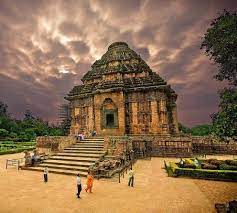

📠Itinerary for 3-Day Trip

Day 1: Jagannath Temple → Golden Beach
⏰ Timings: 6am - 9pm
One of the Char Dham pilgrimage sites, famous for Rath Yatra.

Day 2: Konark Sun Temple → Mukteshwar Temple
⏰ Timings: 6am - 8pm
A 13th-century Sun temple, masterpiece of Eastern Ganga dynasty.

Day 3: Chandipur Beach
⏰ Timings: 8am - 9pm
Known for its receding waters and proximity to DRDO’s test range.